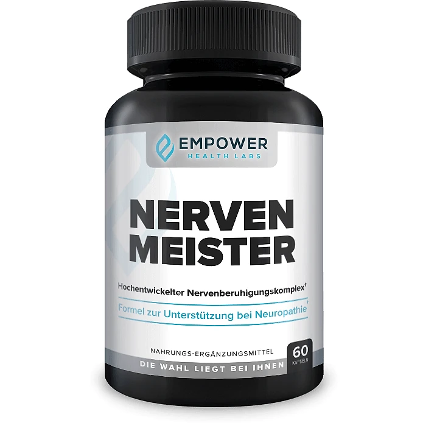
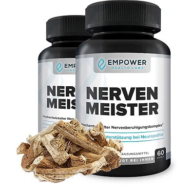

Was ist NervenMeister und wie wirkt es?
NervenMeister ist ein Nahrungsergänzungsmittel in Kapselform von Empower Health Labs. Auf dem Etikett wird es als „Hochentwickelter Nervenberuhigungskomplex“ und als „Formel zur Unterstützung eines gesunden Nervensystems“ bezeichnet. Eine Flasche enthält 60 Kapseln, was bei zwei Kapseln täglich für 30 Tage reicht.
Laut der offiziellen Website richtet sich NervenMeister an Menschen mit Nervenbeschwerden, etwa Kribbeln, Brennen oder Taubheitsgefühlen in Füßen, Beinen und Händen. Der Hersteller erklärt, dass die Formel auf mehrere „Beschwerdewege“ abzielt und eine gesunde Funktion des Nervensystems sowie eine gesunde Entzündungsreaktion unterstützen soll.
Die Formel kombiniert fünf Pflanzen aus verschiedenen Teilen der Welt: Passionsblume, Eibischwurzel, Lerchensporn (Corydalis yanhusuo), Feigenkaktus und Kalifornischen Mohn. Als Hintergrund verweist die Website auf Forschung zum Enzym MMP-13 und dessen möglicher Rolle bei Nervenbeschwerden. Diese Studien betreffen aber die Grundlagenforschung und nicht das Produkt selbst.
Nach Angaben des Herstellers wird NervenMeister in den USA aus weltweit bezogenen Zutaten hergestellt, in einer bei der FDA registrierten Einrichtung nach GMP-Standard. Die Website beschreibt die Inhaltsstoffe als natürlich, gentechnikfrei und frei von Stimulanzien. Außerdem soll das Produkt nicht zur Gewohnheit führen und ohne Tierversuche entwickelt worden sein.
Wichtig für Leser in Deutschland, Österreich und der Schweiz: Die Verkaufsseite arbeitet mit sehr starken Versprechen, etwa dass Nervenschmerzen in wenigen Tagen verschwinden. Solche Aussagen sind bei einem Nahrungsergänzungsmittel nicht belegt, und das Etikett selbst stellt klar, dass das Produkt nicht dazu bestimmt ist, Krankheiten zu diagnostizieren, zu behandeln oder zu heilen.
Nervenbeschwerden können viele Ursachen haben, zum Beispiel Diabetes, Vitaminmangel oder Medikamente. Lassen Sie anhaltende Beschwerden deshalb immer zuerst ärztlich abklären. Ein Nahrungsergänzungsmittel kann eine gesunde Lebensweise unterstützen, ersetzt aber weder eine Diagnose noch eine Behandlung. Ergebnisse können variieren.
NervenMeister Inhaltsstoffe
Laut dem Etikett, das auf der offiziellen Website abgebildet ist, enthält eine Portion von zwei Kapseln:
Passionsblumenpulver (145 mg): aus Stängel, Blättern und Blüte; die Passionsblume wird traditionell bei Unruhe und für einen erholsamen Schlaf verwendet.
Eibischwurzelpulver (110 mg): reich an Schleimstoffen, laut Hersteller zur Unterstützung einer gesunden Entzündungsreaktion.
Corydalis-Pulver (100 mg): aus dem Rhizom des Lerchensporns, einer Pflanze der traditionellen chinesischen Heilkunde.
Feigenkaktuspulver (50 mg): aus der Frucht des Nopal-Kaktus (Opuntia ficus-indica), enthält Antioxidantien.
Kalifornischer Mohn (45 mg): aus den Samen; wird traditionell zur Entspannung und für den Schlaf eingesetzt.
Dazu kommen braunes Reismehl als Füllstoff (1200 mg), Magnesiumsalze der Speisefettsäuren als Trennmittel und Hypromellose als Kapselhülle. Ein Tageswert ist für die Pflanzenbestandteile nicht festgelegt. Laut Website sind alle Zutaten pflanzlich und gentechnikfrei, und die Kapseln enthalten keine Stimulanzien.
Positiv ist, dass jede Menge offen auf dem Etikett steht. Auffällig ist, dass der Füllstoff mengenmäßig den größten Anteil ausmacht und die Pflanzenpulver zusammen knapp 450 mg pro Portion ergeben. Ob diese Mengen für eine spürbare Wirkung ausreichen, lässt sich aus den Angaben des Herstellers nicht ableiten, denn Studien zum fertigen Produkt nennt die Website nicht.
NervenMeister Nebenwirkungen
Die offizielle Website bezeichnet NervenMeister als sicher und verweist auf die natürlichen Inhaltsstoffe. Eine eigene Liste möglicher Nebenwirkungen gibt der Hersteller nicht an. Das Etikett enthält jedoch klare Warnhinweise, die Sie ernst nehmen sollten.
Laut Etikett ist das Produkt nicht geeignet für Personen unter 18 Jahren sowie für Schwangere und stillende Mütter. Vor der Anwendung soll ein Arzt befragt werden, insbesondere wenn Sie Medikamente einnehmen oder an einer Erkrankung leiden. Die empfohlene Dosis darf nicht überschritten werden.
Mehrere der enthaltenen Pflanzen, darunter Passionsblume, Kalifornischer Mohn und Lerchensporn, werden traditionell wegen ihrer beruhigenden Eigenschaften verwendet. Es ist daher sinnvoll, zunächst zu beobachten, ob Sie sich nach der Einnahme müde fühlen, bevor Sie Auto fahren oder Maschinen bedienen. Besonders wichtig ist die Rücksprache mit dem Arzt, wenn Sie bereits Schmerzmittel, Schlafmittel, Beruhigungsmittel oder Antidepressiva einnehmen.
Wer Diabetes hat und wegen Nervenbeschwerden behandelt wird, sollte ein Nahrungsergänzungsmittel nur nach Absprache mit dem behandelnden Arzt einnehmen und keine verordneten Medikamente eigenmächtig absetzen. Darauf weist auch der Hinweistext der Website hin.
Bei ungewöhnlichen Beschwerden setzen Sie das Produkt ab und lassen Sie sich von einer medizinischen Fachkraft persönlich beraten. Das gilt auch bei allergischen Reaktionen auf eine der genannten Pflanzen.
NervenMeister Dosierung
Laut Etikett nehmen Sie als Nahrungsergänzungsmittel täglich zwei Kapseln ein. Die häufig gestellten Fragen auf der offiziellen Website ergänzen, dass die Kapseln zu den Mahlzeiten eingenommen werden sollen.
Eine Flasche enthält 60 Kapseln, also 30 Portionen, und reicht damit für etwa einen Monat. Hilfreich ist es, die Kapseln jeden Tag zur gleichen Mahlzeit zu nehmen, zum Beispiel zum Frühstück oder zum Abendessen, mit einem Glas Wasser.
Der Hersteller empfiehlt eine längere Einnahme und spricht in den häufig gestellten Fragen von einem Zeitraum von bis zu sechs Monaten. Laut Website ist das Produkt zwei Jahre haltbar. Ob und wie schnell sich etwas verändert, ist von Person zu Person verschieden. Ergebnisse können variieren.
Überschreiten Sie die empfohlene Tagesmenge nicht. Das Etikett empfiehlt, die Flasche an einem kühlen, trockenen Ort unter 30 °C zu lagern, außerhalb der Reichweite von Kindern, und das Produkt nicht zu verwenden, wenn die Sicherheitsversiegelung beschädigt ist oder fehlt.
Wenn Sie Medikamente einnehmen, an einer Erkrankung leiden oder unsicher sind, ob die Inhaltsstoffe zu Ihnen passen, sprechen Sie vor der ersten Einnahme mit Ihrem Arzt oder Apotheker. Nehmen Sie eine vergessene Portion nicht doppelt ein.
NervenMeister – Rückerstattung
Laut der offiziellen Website wird jede Flasche NervenMeister mit einer 90-Tage-Geld-zurück-Garantie geliefert. Wer mit den Ergebnissen nicht zufrieden ist, kann nach Angaben des Herstellers alle Flaschen zurückgeben, auch wenn sie leer sind, und erhält eine vollständige Rückerstattung.
Die Allgemeinen Geschäftsbedingungen beschreiben den Ablauf genauer. Zuerst wenden Sie sich an den Kundendienst und erhalten eine Rücksendenummer (RMA). Diese Nummer schreiben Sie außen auf das Paket und senden das Produkt an das Erfüllungszentrum des Herstellers in den USA. Das Paket muss innerhalb von 90 Tagen nach dem ursprünglichen Kaufdatum dort eingehen.
Die Rücksendekosten tragen die Käufer. Bei einer Rücksendung aus Europa in die USA sollten Sie das einplanen. Nach Eingang des Pakets wird die Rückerstattung veranlasst; bis sie auf dem Konto sichtbar ist, können laut Bedingungen einige Werktage vergehen.
Bezahlt wird über Digistore24, wie die Bedingungen angeben. Digistore24 ist ein in Europa verbreiteter Zahlungsanbieter, über den auch Fragen zur Bestellung geklärt werden können. Für Verbraucher in der EU gilt zusätzlich das gesetzliche Widerrufsrecht.
Lesen Sie vor der Bestellung die aktuellen Bedingungen auf der offiziellen Website und bewahren Sie Ihre Bestellbestätigung auf, damit Sie die Frist im Blick behalten. Notieren Sie sich am besten das Kaufdatum, denn die 90 Tage zählen ab dem ursprünglichen Kauf und nicht ab der Lieferung.
NervenMeister Kundenbewertungen
-
Anna R. — St. Louis, MissouriVerifizierter Kauf – 6 Flaschen
„Meine Nervenbeschwerden waren eine große Belastung für mich. Anstatt mich auf den Tag zu freuen, fürchtete ich ihn, weil er nur noch mehr Beschwerden bedeutete. Ich wusste wirklich nicht, was ich tun sollte, aber dann fand ich NervenMeister, und jetzt fühle ich mich so viel besser.“
-
Jason W. — Reno, NevadaVerifizierter Kauf – 6 Flaschen
„Meine Frau sagt, ich sei ein neuer Mensch und ich glaube ihr. Ich fühle mich jetzt so anders. Jetzt kann ich das Leben wieder genießen.“
-
Jonathan T. — Saint Paul, MinnesotaVerifizierter Kauf – 6 Flaschen
„Ich habe schnell einen Unterschied bemerkt, als ich mit der Einnahme dieses Nahrungsergänzungsmittels begann, und meine Beschwerden wurden immer weniger. Jetzt geht es mir großartig!“
NervenMeister – Wo kaufen?
NervenMeister wird laut Hersteller über die offizielle Website verkauft. Dort finden Sie die aktuellen Pakete mit einer, drei oder sechs Flaschen, das Etikett mit allen Inhaltsstoffen, die Allgemeinen Geschäftsbedingungen und die Kontaktdaten des Kundendienstes.
Apotheken, Drogerien oder große Onlinehändler werden auf der Website nicht als Verkaufsstellen genannt. Angebote auf Marktplätzen oder Auktionsseiten stammen daher nicht unbedingt vom Hersteller, und es ist nicht sicher, ob dort die echte Formel verkauft wird.
Ein Kauf über die offizielle Website hat den Vorteil, dass die 90-Tage-Geld-zurück-Garantie des Herstellers gilt. Die Bezahlung läuft über die sichere Bestellseite von Digistore24. Zu den Paketen mit drei und sechs Flaschen gibt der Hersteller zwei digitale Ratgeber dazu.
Achten Sie beim Besuch darauf, dass die Adresse nervenmeister.com lautet, und prüfen Sie auf der Bestellseite genau, welches Paket Sie auswählen. Laut Website wird aus den USA geliefert, die Lieferzeit liegt bei etwa sieben bis zwölf Werktagen. Planen Sie diese Zeit ein, wenn Sie die Einnahme ohne Pause fortsetzen möchten.
Um sicherzugehen, dass Sie das Originalprodukt erhalten, besuchen die meisten Nutzer die offizielle Website.
Ist NervenMeister Betrug?
Nach den verfügbaren Informationen gibt es keinen Hinweis darauf, dass NervenMeister Betrug ist. Das Produkt wird über eine eigene Website verkauft, das Etikett mit allen Mengenangaben ist öffentlich, und die Zahlung wird über Digistore24 abgewickelt.
Laut den Bedingungen gehört die Website der Empower Health Laboratories. Als Kontakt nennt die Website eine Adresse in Tallmadge, Ohio (USA), eine Telefonnummer und eine E-Mail-Adresse; auf dem Etikett steht zusätzlich eine Vertriebsadresse in Moordrecht in den Niederlanden.
Positiv sind die offen deklarierten Mengen und die lange Frist von 90 Tagen für die Geld-zurück-Garantie.
Es gibt aber deutliche Punkte, die Aufmerksamkeit verdienen. Die Verkaufsseite arbeitet mit einem Video, einem Countdown und Versprechen wie dem Verschwinden von Nervenschmerzen in wenigen Tagen. Solche Aussagen sind nicht belegt. Die Kundenstimmen stammen von Personen aus den USA. Und eine Rücksendung muss in die USA geschickt werden, auf eigene Kosten.
Vorsicht ist außerdem bei Angeboten außerhalb der offiziellen Website geboten, denn dort gilt die Garantie des Herstellers in der Regel nicht.
Wie bei jedem Nahrungsergänzungsmittel sollten Sie realistische Erwartungen haben: Ergebnisse können variieren, und Kapseln ersetzen keine ärztliche Behandlung. Wer direkt auf der offiziellen Website bestellt und die Bedingungen kennt, geht nach heutigem Stand kein besonderes Risiko ein.
Wer Produktdetails überprüfen oder die aktuelle Verfügbarkeit prüfen möchte, ist auf der offiziellen NervenMeister-Website am sichersten aufgehoben.
